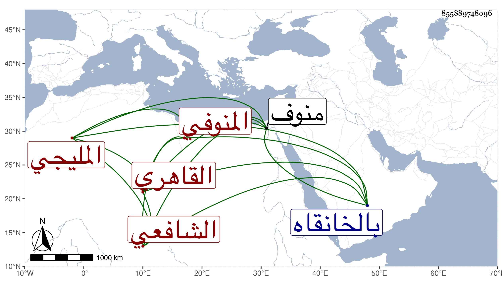

0902Sakhawi.DawLamic.ITO20230111-ara1.EIS1600.855889748096
Biography ID: 855889748096
732
محمد بن محمد بن محمد بن محمد بن عبد الرحمن بن عبد القادر الصدر بن الصلاح بن العزيز المليجي الأصل المنوفي المولد القاهري الشافعي نزيل سعيد السعداء ويعرف بالصدر المليجي . ولد على رأس القرن تقريبا بمنوف وحفظ المنهاج والحاوي وغيرهما وأخذ عن الولي العراقي والبيجوري وجماعة وقطن سعيد السعداء دهرا بدون تزوج ، وكان خيرا تاركا للغيبة غير ممكن أحدا منها بحضرته لم يعهد له أنه قبل من أحد شيئا ولو قل مع الحرص الزائد والرغبة في الجمع بحيث يدور الأسواق بسبب التقاط ما يرى فيه غبطة رجاء لربح يحصل له فيه وكان يظن به لذلك مالية كبيرة فلم يوجد له كبير شيء بل صرح قبيل موته بيسير بأن عنده عشرين دينارا ذهبا وفضة . مات في يوم الخميس مستهل صفر سنة تسع وسبعين بعد تعلله أشهرا وصلي عليه بالخانقاه وقت حضورها مع أنه كان نقل بعد موته منها إلى بيت وإرثه في باب القوس حتى خرجوا بنعشه ودفن من يومه بحوش صوفيتها رحمه الله وإيانا . ومما رأيت عندي أنني كتبته من نظمه :
| لسان حال الرفع نادى لنا | ما حل بي شق على الناظر |
| فإن يكن كسري أتى خفية | لعل أن أجبر بالظاهر |
